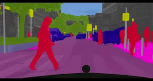
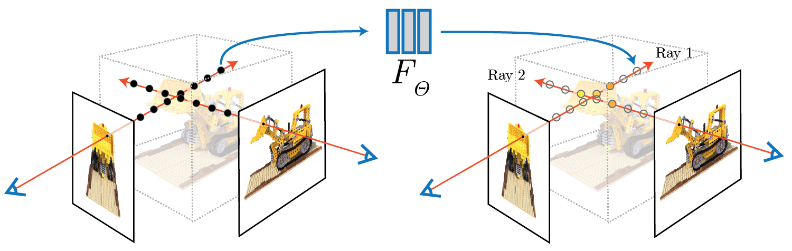
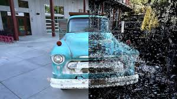
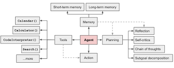
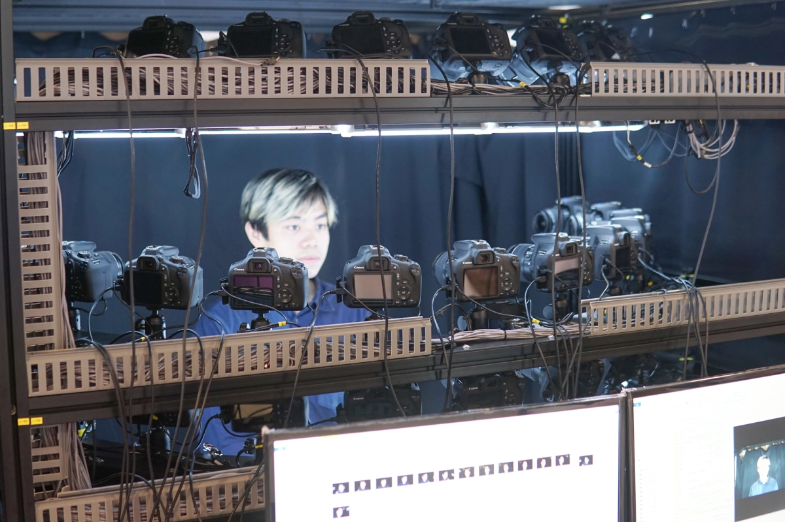

Dao Viet Anh
AI Engineer • LLM Researcher • Full‑stack Developer
About Me
I’m an AI engineer and researcher with expertise in Machine Learning, Deep Learning, LLMs,
MLOps, DevOps, HPC, and full-stack web development. I enjoy building cutting-edge AI
pipelines, integrating LLMs and agents, deploying scalable services, and exploring
cross‑cultural working environments.
Education
-
MSc in Computer Science • University of Engineering and Technology (VNU)
Graduated Dec 2024 • GPA: 3.44/4
-
BSc in Information Technology • University of Engineering and Technology (VNU)
2017–2022 • GPA: 3.24/4 • Academic scholarship 2017–2018
Technical Skills
Machine Learning & Vision
- Algorithms: Linear/Logistic Regression, SVM, KNN, PCA, HMM, DBSCAN
- Deep Learning: CNN, RNN, GNN, DNN — for classification, detection, segmentation, generation
- Vision models: VGG19, ResNet, MobileNet, ArcFace, FaceNet, YOLO, SSD, R-CNN, YOLACT, NeRF, Superpoint
- Image processing: Edge detection, transforms, filtering, stereo vision
LLMs & Agents
- APIs: OpenAI, HuggingFace
- RAG with LangChain, LlamaIndex
- Multi-agent orchestration (LangGraph, AutoGPT-like)
- Custom modular agents (MCP protocols)
MLOps, DevOps & HPC
- Docker, Docker Compose, Kubernetes, Helm
- HPC: DGX-A100, MIG, multi-user Kubeflow
- CI/CD: GitLab CI, GitHub Actions
- Virtualization: KVM, QEMU, network & firewall configuration
Web & Backend Development
- Django, FastAPI, React.js
- Celery, Redis, REST API
- Deployment: Docker, K8s, monitoring (Prometheus, Grafana)
Other Skills
- Languages: Python, C++, JavaScript, Bash
- Tools: Git, Jupyter, Notion, VSCode, OpenCV, Matplotlib
- Soft skills: logical reasoning, self‑learning
- English: proficient technical reading & writing
Research Domains

Computer Vision
Algorithms and pipelines for detection, segmentation, reconstruction.

Neural Radiance Field (NeRF)
3D scene representation and view synthesis using NeRF techniques.

Gaussian Splatting
Research on point-based 3D reconstruction, rendering with Gaussian splats.

LLM Agents
Design and orchestration of agent-based workflows and RAG-powered systems.
Professional Experience
AI Lecturer / Researcher · UET VNU
May 2025 – Present
- Research LLMs and design AI Development curriculum
- Integrate LLMs and agents for document‑understanding workflows
AI Engineer · Samsung SDS
Dec 2023 – May 2025
- Deploy OCR/NLP AI services on Kubernetes and AWS
- Build fullstack web apps with Django, React.js, Celery
- Optimize pipelines and production CI/CD workflows
Research Engineer · VKIST
Jul 2021 – Dec 2023
- 3D face recognition under unconstrained settings
- Contributed to 2 papers and a facial recognition patent
- Built image pipelines with Poliface dataset
MLOps Engineer · VKIST + VNU ITI
Mar 2022 – Dec 2023
- Deployed DGX-A100 Kubernetes cluster using MIG
- Managed Kubeflow and multi-user HPC environment
AI Engineer · Hyperlogy
Jan 2021 – Jun 2021
- Developed FaceNet-based EKYC onboarding service
- Built document verification using OCR and segmentation
Fullstack Developer · Velacorp
Sep 2018 – Dec 2020
- Created microservices for logistics system
- Maintained CI/CD pipelines and Docker deployment
Notable Projects & Publications

Face Recognition System (VKIST)
Built 3D face alignment & reconstruction with PCA, Superpoint, Homography. Published two papers and contributed to a patent.
EKYC & IDP Solutions
Developed face and document verification pipelines (FaceNet, ANN, OCR segmentation), deployed via Django/React, optimized inference & CI/CD.